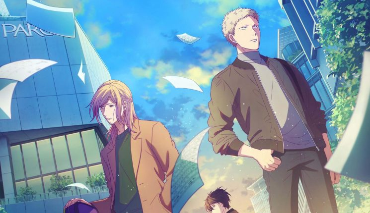

História
Given é uma obra original de Natsuki Kizu (autora do também maravilhoso Links) que conta a história de quatro jovens completamente diferentes, apaixonados pela música e – obviamente – com seus problemas emocionais pessoais que se ligam diretamente com a música de um jeito ou de outro.
Personagens
Por trás das câmeras
Given é uma série de mangá escrita e ilustrada por Natsuki Kizu, publicada bimestralmente pela revista de mangás Cheri+ desde 2003, tornando-se cinco volumes tankoubon pela Shinshokan. Também recebeu uma adaptação para anime em 2019 pelo estúdio Lerche com 11 episódios e está disponível no site de streaming de anime Crunchyroll. Um filme está sendo produzido pela Blue Lynx e deverá ser lançado em 2020. Além desta adaptação, a série também recebeu um audio drama em 2016.
Muitas tramas do gênero yaoi orbitam ao redor de problemas como a falta de comunicação e imaturidade emocional dos personagens, sendo assim, narrativas que envolvem amores platônicos, maus entendidos, relacionamentos tóxicos, ciúmes, insegurança e supressão se sentimentos amorosos são muito comuns.
O que ocorre em Given é, uma tentativa de explorar relacionamentos saudáveis. Por exemplo, enquanto é comum que um personagem se feche em relação ao seus sentimentos para os demais e que estes sentimentos apenas sejam confrontados em uma briga onde um personagem obriga o outro a confessar seus sentimentos e normalmente acaba com um personagem se sentindo oprimido e o outro arrependido, em Given temos Ritsuka respeitando o tempo que Mafuyu leva para se abrir, não o obrigando a fazê-lo até que este se sinta pronto.
Elisabeth Kubler-Ross é uma psiquiatra que conseguiu identificar as 5 fases do luto, reações psíquicas que ocorrem em pessoas quando elas lidam com uma perda ou quando se encontram em fase terminal, sendo elas: Negação, raiva, barganha, depressão e aceitação.
A superação de cada fase até a aceitação deve vir quando os sentimentos e pensamentos que o indivíduo tende a evitar são externalizados pelo mesmo. Deve-se enfrentar e vivenciar estes sentimentos de luto até que a aceitação aconteça.
Em Given vemos as diferentes fases do luto em dois personagens: Kashima, antigo baixista da banda de Yuuki ainda está no estágio da raiva, culpando Mafuyu pelo suicídio de seu amigo, enquanto Mafuyu ruma da depressão para o estágio da aceitação.